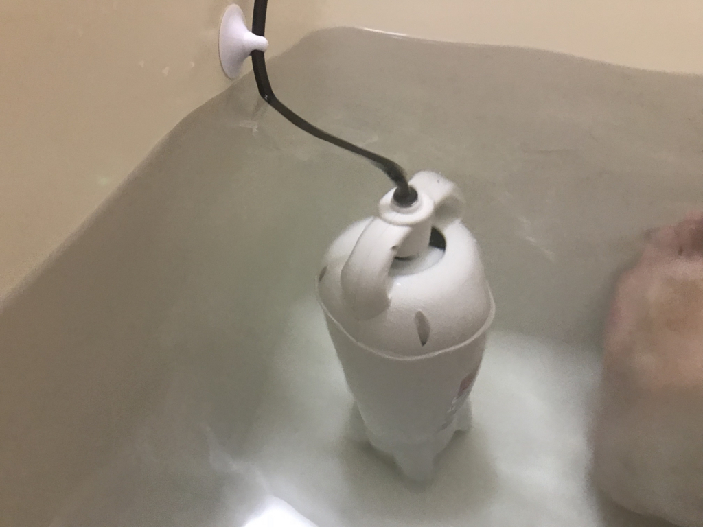

日記：ジムの解約＆ミニ風呂バンス
公開日：
今日は午前中だけちょっと仕事して、午後は丸々休んだ。連休中、半分仕事したからね、仕方ないよね！ 残り3日間頑張ったらまた休みっていうのがまたちょっと気楽で、そのせいか、最近はぐっすり眠れる。
昼からは久しぶりにジムに行った。今年はいろいろあって、まだ3回目ぐらいしか行けてない……というわけで、思い切って解約してきた。一時期は割と頑張ってたから、平均したら週に1回ぐらいは行けてたのかな？ 体重はまったく減らなかったけど、泳ぐのは割りと好きなのでいい気分転換になった。契約は3月末まで残ってるので、そのあとは近所のジムに切り替えるつもり。
というのも、今のジムは歩いて15分～20分ぐらいかかる。最初はいい運動になると思ってたけど、最低1時間は泳ぐとして、往復で2時間食うんだよね。仕事の合間に行きたいと思っても、2時間もまとまった時間が取れることは少なかった。いま目をつけているジムは徒歩5分（早歩きだったら3分かもしれない）の所にあるから、もう少し気軽に行けるはず。
じゃぁ、なんで初めからその近い方を選ばなかったのか――これは、うちのお風呂に追い炊きがついてなくて、冬の風呂が寒かったからなんだ。遠い方のジムにはジャグジーがついているけれど、近い方のジムはシャワーしかないみたいで、それが決め手になった。

けれど、この冬導入した秘密兵器でお風呂が寒い問題も解決。遠いところまで通いモチベーションがかなり減ってしまった。近所のジムはいつもいくスーパーに併設されてるから、ついでに買い物もできるんだぜ。

- 出版社/メーカー: 株式会社パアグ
- メディア: ホーム&キッチン
- この商品を含むブログを見る
ちなみにこの「ミニ風呂バンス」という商品、注文履歴によると12月1日に購入したらしいので、もう3カ月目になるわけだけど……なかなかよかった。ぬっくぬくとは言わないけど、寒いとは感じなくなった（もう少し強いやつにしてもよかったかもしれない）。Kindle Oasis や iPhone、iPad などの防水端末のおかげもあいまって、長風呂がはかどるぜ……17,800円は安くないけど、導入した価値はあったと思う。欠点は……とくにないけど、入浴剤が使えないのは困るっていうひとはいるかもしれない。あと、温度調節はできない。
でも、こういうのがなくても済むに越したことはないわけで。次引っ越すときは追い炊きのある家にしたいなぁ。せめてお風呂が寒くない物件がいいんだけど、内覧するだけではよくわかんないよな……。